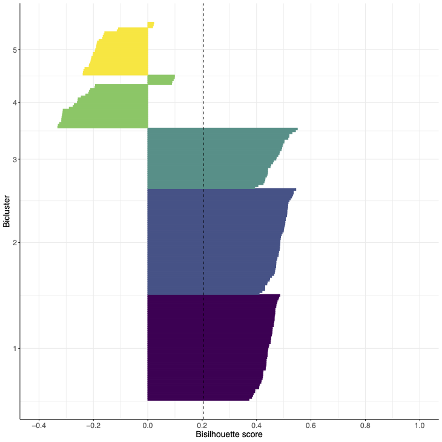
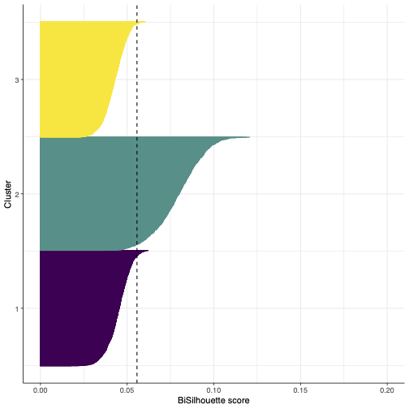
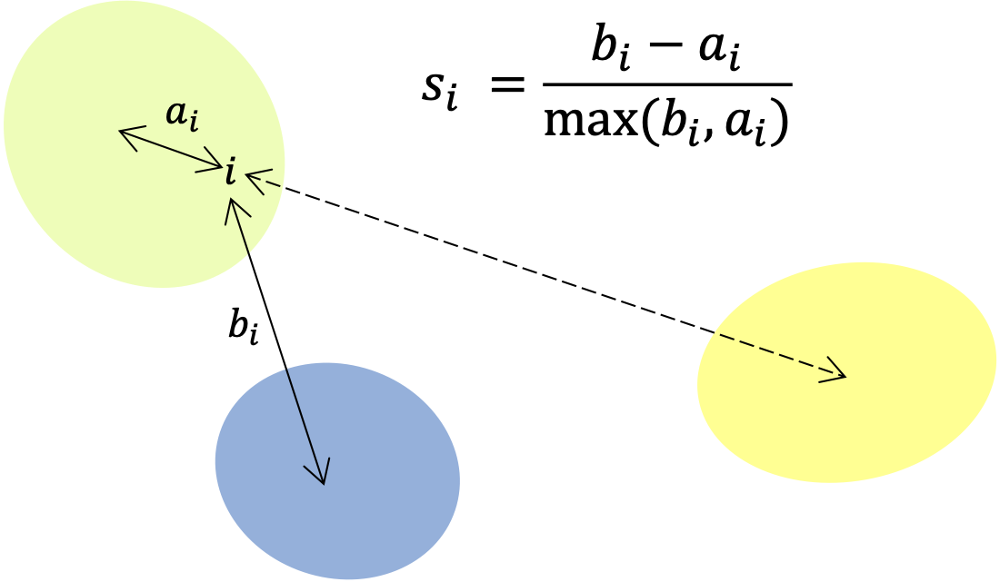
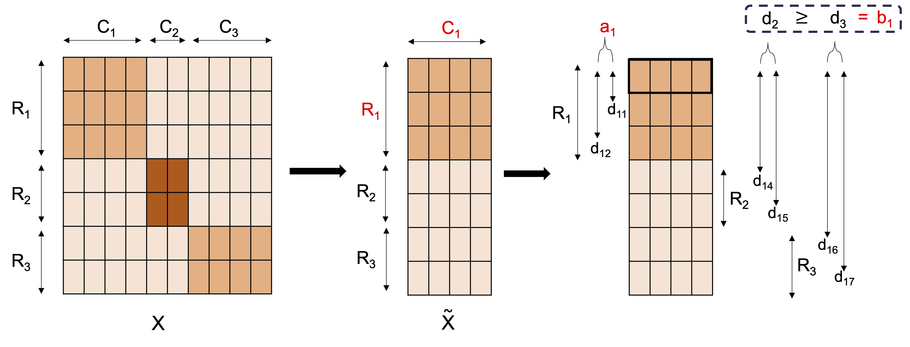

The bisilhouette score is an extension of the silhouette score to the bicluster case. It is a measure of the quality of a biclustering, taking into account the compactness and separation of the biclusters. This vignette provides an overview of the bisilhouette score and how it can be used to evaluate biclustering results.
Examples
Calculate score
The function bisilhouette calculates the bisilhouette
score of a biclustering. See the package landing page for more details
on the input parameters.
Visualisations
The function plot_bisil produces a visualisation of the
bisilhouette scores. The individual bisilhouette coefficients for each
of the rows is shown along the x axis, with rows grouped into the
assigned biclusters (denoted by different colours). The mean coefficient
is represented by the dashed line.
For example:
- Bisilhouette plot for synthetic data with 3 views and 5 biclusters using the true column clusters and 3 out of 5 of the correct row clusters with the remaining row clusters having been reassigned randomly.

- Bisilhouette plot for biclusters obtained from a single cell transcriptomic dataset.

Note that the axes ranges are different as the bisilhouette score is not comporable across distinct datasets.
Description
Silhouette score
The silhouette score that takes into account compactness and separation of clusters as well as allowing for overlap and non-membership. It considers the average distance between an element and others belonging to the same cluster as well as the average distance to the nearest cluster.
More specifically, for element in cluster the average distance to the other elements in the same cluster is given by , where be the Euclidean distance between row and row of a matrix. The average distance to the elements in the next closest cluster is calculated via . The silhouette coefficient for element is defined by . A score for each cluster is returned by averaging over the silhouette coefficients corresponding to the elements in the cluster. These are further averaged to give an overall score for the clustering as in equation:
This is illustrated in the following image:

Bicluster extension
To extend the silhouette score to the bicluster case, the silhouette coefficients are calculated for each row in a given bicluster, based only on the columns corresponding to that bicluster.
The data matrix is subsetted by the columns belonging to , . Treating as the clusters, the silhouette coefficients for the elements of on are calculated. Averaging over the coefficients, is found as illustrated in the figure below.

As with the silhouette score, takes values in with a higher score indicating a more compact and well separated bicluster. A value of 1 is obtained if the columns are constant within the bicluster. Care should be taken as this can be achieved when the columns are constant across all rows, not just those belonging to the bicluster. This issue is prevented by removing features with zero/very low variance. An overall bisilhouette score for the biclustering is given by calculating the mean over the non-zero . A score of zero is assumed to correspond to an empty bicluster - a non-empty bicluster with score exactly zero is very unlikely for data with any signal present.
The above assumes all and are non-empty and there are at least three unique sets amongst the row clusters.
Edge cases
There are several edge cases to consider when calculating the bisilhouette score.
Suppose the row and column clusters present in a biclustering have been successfully identified, but they are all incorrectly paired. Consider case (i) where there are at least three unique row clusters. In calculating the silhouette score for the first column cluster, the values for this bicluster are likely to be small as these rows do not form part of a bicluster over the columns considered. At least one of the row clusters is also not associated with this column clusters and will likely constitute the next closest bicluster. The values for this bicluster are again likely to be small (similar to the values) and so a small overall score for this bicluster will be returned. Consider case (ii) where there are at maximum two unique row clusters. The values are calculated as before, but as there is only one other row cluster the values correspond to the true row cluster. However, these rows do exhibit different behaviour over the considered columns. This leads to larger values and an inflated overall score, despite the absence of any correctly identified biclusters. Similarly, when the biclusters are simply not informative a similar effect is seen; if there is by chance more variation in the `other’ row cluster considered this could cause larger values leading to an inflated score.
In order to mitigate this effect, when less than three unique row clusters are present, extra row cluster are generated until this is no longer the case. Each row is randomly assigned to the new row clusters with a probability of . The bisilhouette score using this new set of row clusters is calculated. It is worth noting that the generation of additional row clusters is solely for the purpose of the calculation of the bisilhouette score. This process is repeated times and the average score is reported.
If no biclusters are present a score of 0 is given. This ensures a biclustering with a positive bisilhouette score (at least some separation) will be chosen over an empty biclustering.
With these edge cases considered, the bisilhouette score can be calculated for any number of biclusters, allowing for comparison between any two sets of biclustering results. This is in contrast to the silhouette score which is only defined for two or more clusters.